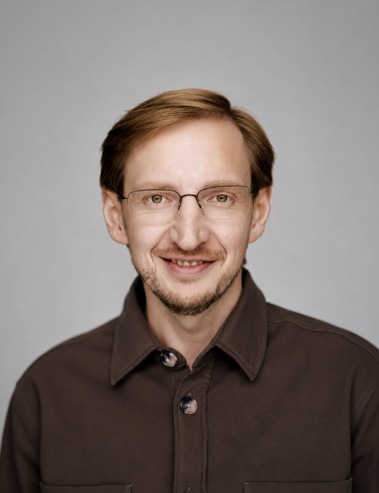
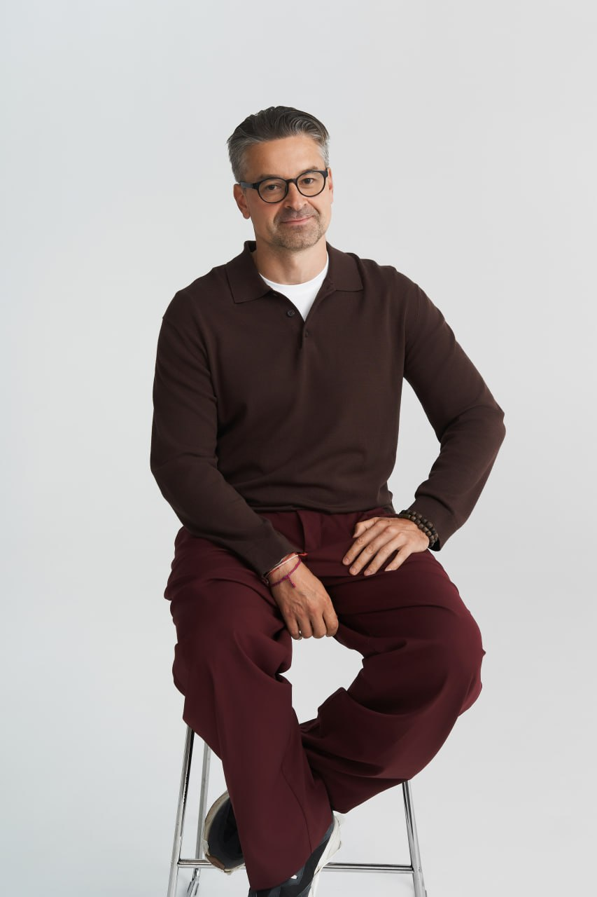

Ресторанный альянс «Культура гостеприимства»
16лет
Она прошла путь от регионального игрока до масштабной ресторанной группы, успешно развивающей проекты в пяти городах России.
21проект


В основе этого роста — сильная операционная система, цифровизация процессов, современные технологии управления и дисциплина исполнения. Именно такой подход позволил компании не только масштабироваться, но и сохранить устойчивость бизнеса в период серьёзных изменений на рынке HoReCa.